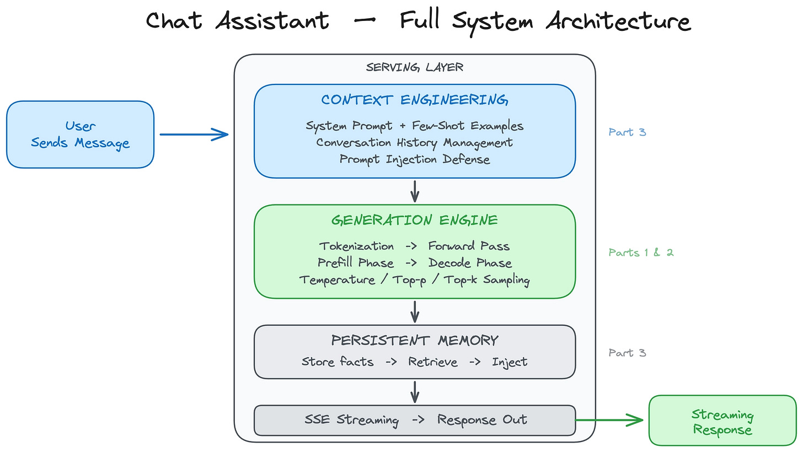
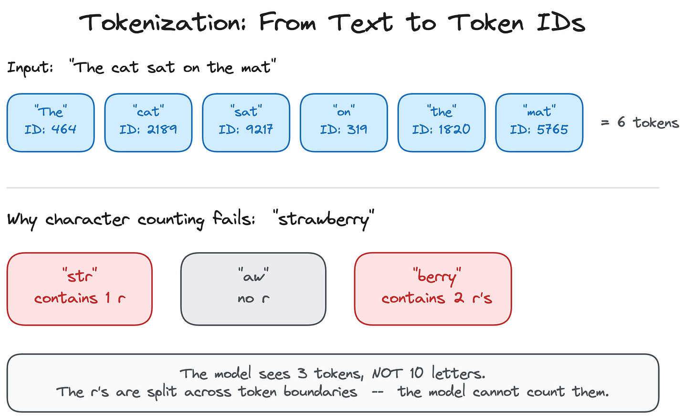
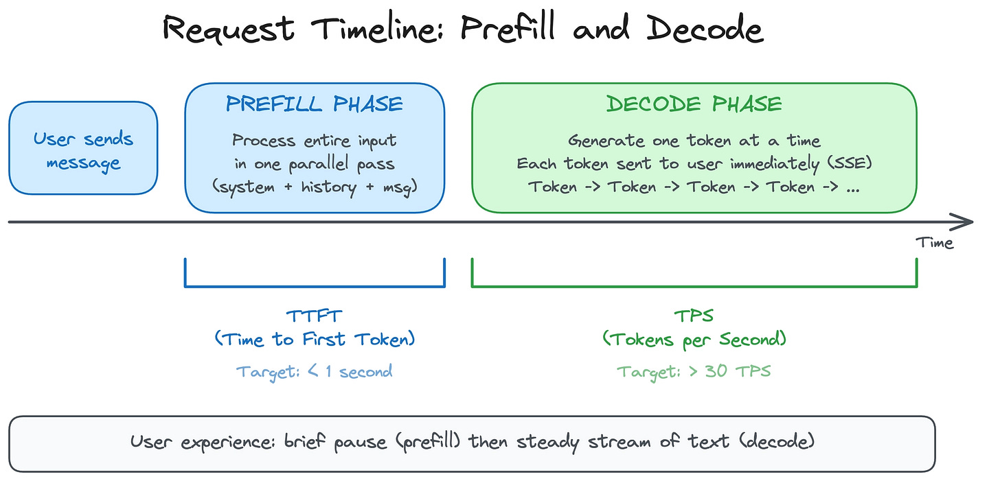
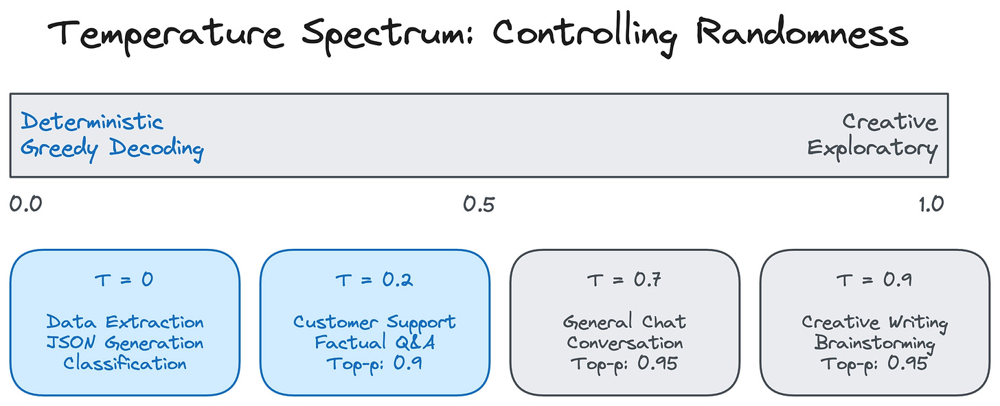
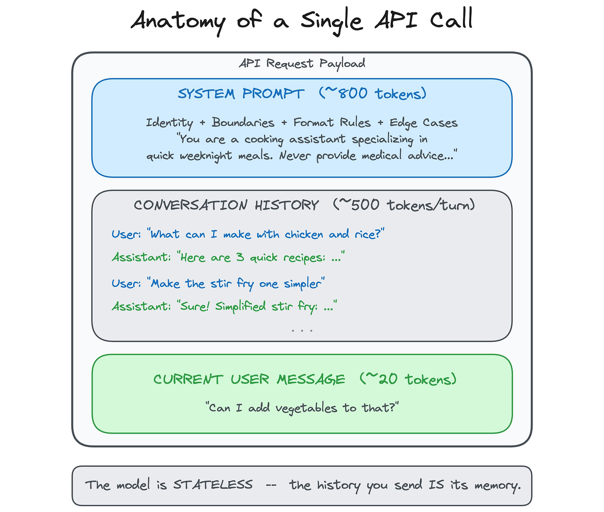
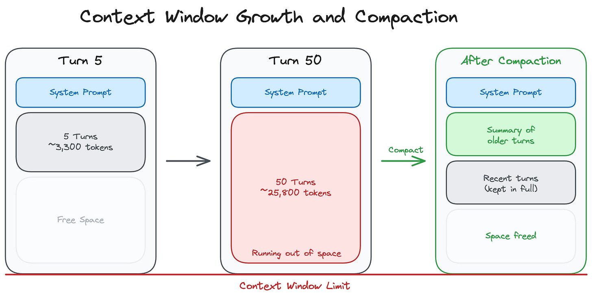
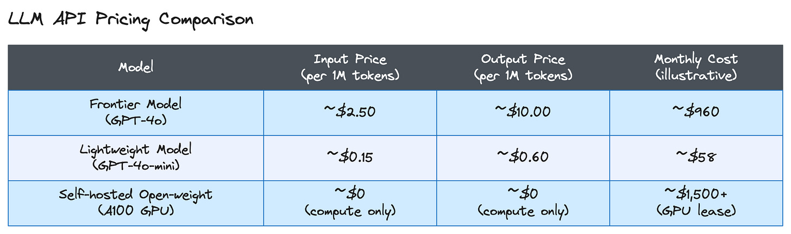
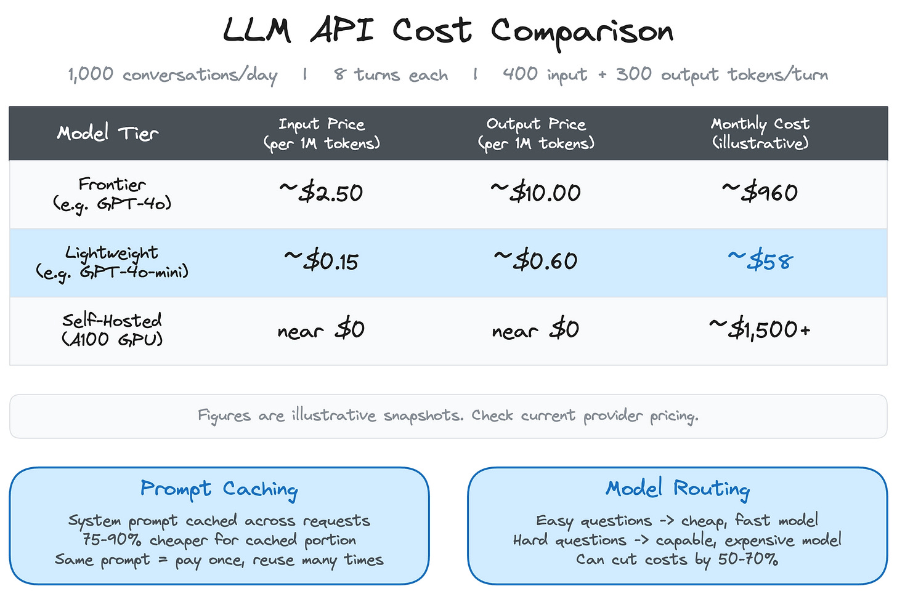
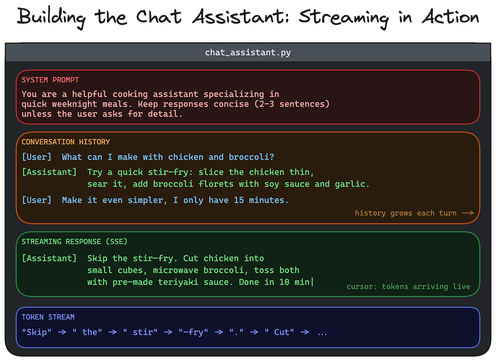

Design a personal AI chat assistant
#144: Part 2 - Generative AI Masterclass


Share this post & I'll send you some rewards for the referrals.
ChatGPT, Claude, and Gemini handle general-purpose tasks and one-off conversations well…
The moment your assistant is customer-facing, the requirements change:
Your users need an assistant that knows your product, your policies, and their history with you. That knowledge lives in your systems, NOT in a model’s training data. You could try to inject it at runtime, but proprietary data comes with real constraints: it is often too large to fit in a context window, too sensitive to send to a third-party API, and too dynamic to stay current in a static prompt.
Beyond data, you cannot fully configure its behavior; you cannot integrate it past a browser tab, and costs scale with every conversation…
Here is what changes when you build your own:
Privacy and data control. When you build your own assistant, conversations stay on your infrastructure. You decide what gets logged, how long it gets stored, and when it gets deleted. For healthcare, legal, finance, and enterprise use cases, this is a compliance requirement, not a nice-to-have.
Full control over behavior. You own the system prompt, persona, and the guardrails. You can enforce a specific tone, restrict responses to your product domain, swap the underlying model, or A/B test different configurations. With an off-the-shelf product, you get what they ship.
Cost at scale. You can implement prompt caching, model routing (a cheap model for simple questions, an expensive one for hard ones), and context management strategies that dramatically cut costs. With thousands of conversations per day, the savings are significant.
Product integration. Your assistant lives inside your product, not in a separate tab. It shares your auth system, your UI, and your user context. That level of integration is not possible when you are wrapping someone else’s chat interface.
Security. You control the full request path: what goes into the model, what comes out, and what filters run in between. You implement your own prompt injection defenses, output guardrails, and content policies.
Off-the-shelf tools are great for personal use and internal prototyping. Building your own is for when the assistant is the product or a core feature.
Enterprise auth from day one. No upgrade required. 🚀 (Partner)

Enterprise auth is intimidating without a doubt - SSO, SCIM, etc.
You may feel these features are next year’s problem because the price jump to unlock basic SAML or OIDC connections is just too brutal for an early-stage roadmap.
With Auth0, ship your first Enterprise Connection and SCIM setup for $0 on their free tier. If you’re scaling AI Agents, security stack is built for production:
Token Vault: Securely connect 3rd-party tokens (Slack, GitHub) to stop hard-coding API keys.
FGA for RAG: Ensure LLMs respect fine-grained permissions to prevent data leaks and also control access to specific AI tools/models.
Async Authorization: Use backchannel authentication for human-in-the-loop approvals on critical agent actions.
User Authentication: Securely identify users to unlock chat history, order tracking, and personalized settings within your AI agents.
And stop worrying about DIY-ing auth.
(Thanks to Auth0 for partnering on this post.)
I want to reintroduce Louis-François Bouchard as the author of this newsletter.
He’s a best-selling author (Building LLMs for Production), the co-founder of Towards AI, and the creator of the YouTube Channel, What’s AI, where he helps people understand AI and learn how to apply it in the real world. Through his development work with clients and his content, teaching, and AI training programs on the Towards AI Academy, Louis focuses on making AI practical for builders, engineers, and curious learners alike.
At Towards AI, he and his team train AI engineers through courses built for every stage, from beginner to advanced. That educational mission and the real-world experience building for his clients are exactly why I wanted him in this newsletter series.
Inside this newsletter, you’ll get:
What happens when you send a message. Tokenization, prefill, and decode phases, KV-cache, and why longer conversations get slower and more expensive.
How the model got here. Pretraining, post-training (SFT and RLHF), and scaling laws, and what each one means for the assistant you are building.
Output controls. Temperature, top-p, top-k, why hallucination happens, and which settings to use for which task.
Context engineering. System prompts, few-shot, chain-of-thought, structured outputs, context window management, and persistent memory across sessions.
Cost and how to know it works. Worked token math across model tiers, prompt caching, model routing, golden test sets, and LLM-as-Judge evaluation.
A practical eight-step build. From a single API call to a production-minded assistant with streaming, system prompts, JSON output, multi-turn compaction, prompt injection defense, and persistent memory.
What We Are Building
We’re building a ChatGPT-style conversational assistant that you fully control: your own system prompt, your own personality, your own rules.

Here are the requirements:
Multi-turn conversation with context preserved across turns.
Streaming responses, where words appear as they’re generated.
Configurable behavior, creative for brainstorming, precise for data extraction.
Resistant to prompt injection attacks.
Cost-effective at scale, with thousands of conversations per day.
One extra feature covered later: persistent memory across sessions, so the assistant remembers user preferences between conversations.
What this system does not do: it does NOT retrieve external documents, it does NOT have domain expertise beyond its training data, and it does NOT take actions or call tools. It’s purely conversational.
We use a model API (OpenAI, Anthropic, or similar) for this build.
The provider handles GPUs, scaling, and inference optimization, the right starting point for most teams. When you outgrow APIs, you move to self-hosted open-source models served with vLLM, llama.cpp, or SGLang.
This newsletter is organized around 4 core design decisions:
What happens when you send a message?
How do you control what the model says?
How do you engineer the context for every request?
What does it cost, and how do you know it works?
(Then we build the whole thing from scratch in Part 5.)
Let’s start with what happens under the hood when you send a message…
Part 1: What Happens When You Send a Message
When you call a model API, a lot happens between your request and the first token appearing on screen.
Even if you never need to use a GPU, this helps you understand the latency, cost, and trade-offs…
From Text to Tokens
Before the model can process your message, it needs to convert it from text into numbers.
Models do not read words. They work with tokens, small chunks of text mapped to numerical IDs. A token might be a whole word (“the”), part of a word (“un”, “believ”, “able”), or a single character.
The process of splitting text into tokens is called tokenization.
As we covered in Part 1, there are different ways to split text into tokens:
You could split by individual characters, but then the model has to process very long sequences just to read a short sentence. You could split by whole words, but then the vocabulary becomes enormous, and the model cannot handle any word it has not seen before.
Subword tokenization is the sweet spot, and virtually all modern models use it.
The most common algorithm is Byte Pair Encoding (BPE). BPE starts with individual characters and iteratively merges the most frequent pairs into a single token. Common words like “the” or “and” become single tokens. Rare or long words get split into meaningful pieces. The word “unbelievable” might be broken into three tokens: “un” + “believ” + “able.” This keeps the vocabulary manageable, typically 30,000 to 100,000 tokens. And if the model encounters a word it has never seen before, it can still process it by breaking it into known subword pieces.
This is why language models struggle with certain tasks that seem trivial to humans…

Ask “How many r’s are in strawberry?” and the model might get it wrong because it never sees the individual letters. The word “strawberry” might be tokenized as “str” + “aw” + “berry,” so the model literally cannot count the r’s because they are split across token boundaries. Reversing a word, counting specific characters, and other character-level operations are all hard for the same reason: the model operates on tokens, not letters.
Tokenization has direct practical consequences for building a chat assistant.
Token count does not equal word count: a typical English sentence of 10 words might be 13 to 15 tokens. Code is usually more token-dense than prose. Non-English languages often require more tokens per word because BPE vocabularies are built primarily from English text. Since API pricing, context window limits, and latency all scale with token count, understanding this conversion is essential for cost estimation and context management, both of which we cover later in this newsletter.
Reminder: this is a teaser of the subscriber-only newsletter series, exclusive to my golden members.

When you upgrade, you’ll get:
Simple breakdown of real-world architectures
Frameworks you can plug into your work or business
Proven systems behind ChatGPT, Perplexity, and Copilot
How the Model Got Here: From Pretraining to Chat
Before we look at what happens on each request, it helps to understand what happened before you ever sent a message…
The model you are calling went through a multi-stage pipeline to become a chat assistant, and each stage has direct consequences for the product you are building.
Pretraining is where the model learns language.
As covered in Part 1, the model is trained on a massive corpus, books, websites, code, research papers, and learns to predict the next token given all the tokens before it. This is self-supervised: no one labels the data. The model just reads trillions of tokens and learns patterns. Pretraining is what gives the model its general knowledge, its grammar, its ability to write code, and its tendency to produce plausible-sounding text, whether or not it is true.
When your chat assistant confidently states a wrong fact, that behavior traces back to pretraining: the model learned to produce likely continuations, not verified truths.
Post-training is what turns a text predictor into a chat assistant.
The pretrained model is good at completing text, but it does not know how to follow instructions, hold a conversation, or refuse harmful requests. Post-training fixes this in stages.
First, supervised fine-tuning (SFT) trains the model on curated examples of good conversations: a user asks a question, and a human-written response shows what the ideal answer looks like. This teaches the model the format and style of a helpful assistant.
Then, reinforcement learning from human feedback (RLHF) refines the model further. Human raters compare pairs of model responses and pick the better one. The model learns from those preferences, becoming more helpful, more accurate, and less likely to produce harmful or unhelpful output.
This is why the same base model can feel completely different depending on how it was post-trained. It is also why system prompts work: the model was specifically trained to follow developer-level instructions during post-training.
Scaling laws govern the relationship between model size, training data, and performance.
Research (notably Kaplan et al. at OpenAI and the Chinchilla paper from DeepMind) showed model performance improves predictably as you increase the number of parameters and training tokens, following power-law curves.
This is why the industry keeps building bigger models: doubling model size produces measurable, predictable gains in capability. For you as a builder, scaling laws explain the cost-capability tradeoff you face.
A frontier model (hundreds of billions of parameters) costs more per token but handles harder tasks. A lightweight model (fewer parameters, less training) is cheaper and faster but less capable. The tiered pricing you see from API providers, frontier versus mini versus nano, maps directly to where each model sits on the scaling curve.
Understanding this helps you make the model routing decisions we discuss later: use the big model when you need its capabilities, and the small model when you do not.
Let’s keep going!
What the Model Does with Those Tokens
Once your message is tokenized, the model processes the entire sequence of tokens through its layers. This is called the forward pass.
Recall from Part 1 that the chat models we use (GPT-4o, Claude, Gemini, Llama) are all decoder-only Transformers: they read a sequence of tokens and predict what comes next, one token at a time. That architecture is exactly what a chat assistant needs.
During the forward pass, each layer transforms the token representations, using the attention mechanism (covered in Part 1) to determine which tokens are relevant to one another. By the end of the forward pass, the model produces a probability distribution over its entire vocabulary: a ranked list of the likelihoods of each possible token appearing next.
The system then uses a sampling strategy to pick one token from that distribution, i.e., one token generated.
To produce the next token, the model runs another forward pass. This time, it includes the token it just generated as part of the input. This is the core loop of autoregressive generation, and it directly shapes the two-phase pattern you observe as a user.
Two Phases: Prefill and Decode
When your request hits the model, two things happen in sequence:
First, the model processes the entire input (the system prompt, conversation history, and your message) in a single parallel pass. This is the prefill phase. The model reads everything at once, building up its internal understanding of the full context.
Then it switches to generating one token at a time. This is the decode phase. Each new token is produced, sent to you, and then fed back into the model as input for the next prediction.
This two-phase pattern is why you experience a brief pause before the first word appears, followed by a steady stream of text.

Two metrics capture this experience:
Time to First Token (TTFT) measures how long you wait before the response starts, driven by the prefill phase.
Tokens per Second (TPS) measures how fast the rest of the response streams in, driven by decode speed.
For a chat assistant, TTFT under one second and TPS above 30 feels responsive. When you evaluate API providers, these are the numbers to compare.
Why Longer Conversations Get Slower and More Expensive
Here is something that is not obvious until you build a chat product: the longer the conversation, the slower and more expensive each response becomes.
Generating each new token requires the model to consider everything that came before it. To avoid reprocessing the entire conversation from scratch for each token, inference engines use a technique called the KV-cache: a store of intermediate computations that lets each new token build on previous work rather than restarting from scratch.
Think of it like a student taking notes during a lecture: instead of re-reading the entire textbook for every new question, they check their notes and only process the new information.
This is one of many optimizations happening behind the scenes…
API providers and self-hosted engines (vLLM, SGLang) also use techniques such as:
quantization (reducing numerical precision to save memory, like rounding 9:57 to 10:00; close enough to be useful, cheap enough to be practical),
speculative decoding (a small, fast model drafts several tokens at once, and a large model verifies them in parallel, faster than generating one token at a time from scratch),
continuous batching (serving many users on the same GPU simultaneously, the way a waiter handles many tables rather than one at a time).
You do not need to configure any of these when using an API, but they explain why longer conversations cost more (more tokens to cache and process), why context windows have limits, and why different providers offer different price-to-latency trade-offs.
Streaming
Since tokens are generated one at a time, we can send each token to the user as it’s produced rather than waiting for the entire response to finish.
This is done via Server-Sent Events (SSE), a standard web protocol where the server pushes a stream of small updates to the client over a single HTTP connection.
Streaming does not reduce total generation time. A 200 token response still takes the same amount of compute whether you stream it or wait. But it transforms the user experience: instead of staring at a blank screen for several seconds, the user sees words appearing immediately and can start reading while the rest of the response is still being generated.
This is the single biggest UX improvement in chat products, and every major API supports it with a single parameter flag.
Now you know what happens when a message goes in and a response comes out. But the model does not just pick the single most likely token every time; some settings control how it makes that choice.
That is what Part 2 covers…
Know someone who wants to learn system design? Consider gifting a subscription:
Part 2: Controlling the Model’s Output
Every model API exposes a few key parameters that control how the model generates text.
Understanding what they do and when to change them is the difference between a reliable assistant and a frustrating one…
The Parameters You Actually Use
When calling an API (OpenAI, Anthropic, or a self-hosted one), you typically configure three settings:

1. Temperature (0 to 1+) controls randomness.
Say the model is completing the phrase “The sky is...” At temperature 0, it always picks the single most likely next token, probably “blue.” This is called greedy decoding, and it produces deterministic, reproducible output. At temperature 0.9, it samples more broadly: “blue” is still likely, but “overcast,” “vast,” or “endless” all become plausible. Temperature is not a quality knob. It is a randomness dial.
The right setting depends entirely on the task.
2. Top-p (nucleus sampling) works on the same “The sky is...” distribution, but limits which tokens the model can choose from in the first place.
A top-p of 0.9 means: take the most likely tokens until their combined probability reaches 90%, and ignore everything else. Tokens like “purple” or “delicious,” which are statistically possible but highly unlikely, are entirely cut from consideration. This prevents the model from picking tokens so unlikely that they produce nonsensical output.
3. Top-k takes a simpler approach: instead of a probability threshold, it keeps the k most likely tokens and discards the rest.
For “The sky is...”, a top-k of 5 might keep “blue,” “clear,” “dark,” “gray,” and “cloudy,” sampling only from those five regardless of their probability distribution. It’s less commonly exposed than temperature and top-p, but available in some APIs and all self-hosted frameworks.
These three settings work together, and different tasks within the same assistant benefit from different configurations.
General conversation works well with a temperature around 0.7 and top-p of 0.95, enough randomness to feel natural and enough constraint to stay coherent.
Customer support and factual Q&A should use a lower temperature around 0.2 with top-p of 0.9, favoring consistent and accurate responses.
Creative writing can push the temperature to 0.9 with top-p of 0.95 for more varied output.
Data extraction and JSON generation should use a temperature close to 0 for fully deterministic results.
Why Hallucination Happens
The model picks each token based on statistical likelihood, not factual accuracy…
It has no internal fact-checker, no database to query, and no way to verify whether what it says is true. “Plausible” and “true” are different things, and the model is optimized for plausibility.
For a chat assistant, this is the primary failure mode:
The model will confidently tell you that a made-up library exists, cite a paper that was never written, or invent a statistic that sounds right but is completely fabricated. It does this not because it is broken, but because generating plausible-sounding text is literally what it was trained to do.
Mitigation strategies include low temperatures for factual tasks (to reduce the likelihood that the model explores unlikely but creative completions), system prompts that instruct the model to acknowledge uncertainty (“If you are not sure, say so”), and structured outputs that constrain responses to a predefined schema.
Temperature and sampling control how the model picks tokens.
But the quality of a response depends just as much on what goes into the model as what comes out. The input, system prompt, conversation history, and user message are the context. Engineering that context well is the single most important skill in building a chat assistant.
Know someone who wants to learn system design? Consider gifting a subscription:
Part 3: Context Engineering
Context engineering is the practice of deciding what goes into every API call and how it is structured…It’s what separates a demo from a product.
Every decision here affects quality, cost, and reliability.
A well-engineered context produces consistent, on-brand responses. A poorly engineered one produces an assistant that drifts off-topic, forgets what the user said three messages ago, and costs more than it should.
Anatomy of an API Call
As we covered in Part 1, every API call contains three parts: system prompt (developer instructions), conversation history (previous turns), and the user’s current message.
These three pieces get concatenated together and sent to the model as a single input.

The critical thing to internalize is that the model is stateless:
It has NO memory between calls. It does NOT remember what you said five minutes ago, or even five seconds ago. The conversation history you send is the model’s memory. If you leave a message out of the history, the model has no idea it ever happened.
Every design decision in this section is about what goes into that payload and how it is structured…
System Prompts
System prompts are developer-defined instructions included in every request. Here, we focus on how to write effective ones for a chat assistant.
How long should a system prompt be?
Long enough to cover the important cases, short enough to leave room for conversation. A good target is 200-800 tokens. Below that, you are likely under-specifying behavior and leaving the model to fill in gaps on its own. Above 1,000 tokens, you are spending context budget on instructions that could be consolidated, and you risk the model losing track of constraints buried deep in a long block of text.
If your system prompt is growing past 1,000 tokens, treat that as a signal to refactor rather than keep adding.
A good system prompt has four qualities:
Specific identity. “You are a cooking assistant that specializes in quick weeknight meals” is far better than “You are an AI.” The more specific the identity, the more consistently the model stays in character. A vague identity produces vague behavior.
Explicit boundaries. “Never provide medical advice. If asked about health topics, suggest consulting a doctor.” Without boundaries, the model will try to be helpful on any topic, including those where helpfulness is dangerous. Boundaries tell the model where its helpfulness should stop.
Format instructions. “Respond in two to three sentences unless the user asks for details.” Verbosity is one of the most common complaints about chat assistants. Without guidance on format, models tend to over-explain. A single line in the system prompt can fix this.
Edge case handling. “If the user’s question is ambiguous, ask one clarifying question before answering.” Real users do unexpected things. They ask half-formed questions, switch topics mid-sentence, and paste in text without any context. The system prompt is where you handle these situations gracefully.
One important caveat: system prompts are probabilistic, not enforced.
The model follows them most of the time, but not all the time. A sufficiently creative user or a sufficiently long conversation can cause the model to drift from its instructions. This is why system prompts alone are NOT enough.
Output guardrails and input validation cover what instructions cannot enforce.
Few-Shot Prompting
The system prompt tells the model what to do. Few-shot examples show it how…
Few-shot prompting means including examples of desired input-output pairs directly inside the prompt. Instead of describing the format you want in words, you show the model three to five examples of exactly what a good response looks like.
This is often more reliable than verbal instructions, especially for tasks with a specific format or tone.
If you want the assistant to respond to product questions in a specific structure, say a one-line summary followed by a bulleted breakdown, showing three examples of that structure is more effective than describing it.
The trade-off is tokens: each example consumes context window space.
Three to five examples are the typical sweet spot. More than that, you are spending tokens on examples that could be used for conversation history. Fewer than that, and the model might not reliably pick up the pattern.
Chain-of-Thought Prompting
Few-shot examples help with format and tone. But some tasks need the model to actually reason, and that is where the chain-of-thought comes in…
Chain-of-thought (CoT) prompting works by adding a simple instruction, such as “Think through this step by step before giving your final answer.”
Why does this help? Because each reasoning token the model generates becomes part of the context for the next token. The model is essentially giving itself working notes. When it writes “First, let me consider X... then Y follows because of Z... therefore the answer is W,” each step constrains and guides the next one. The model is less likely to jump to an incorrect conclusion because it must justify each intermediate step.
CoT helps most with math, logic, and multi-step analysis.
For simple lookups, classification, or format conversion, it just adds cost and latency without improving quality. In a chat assistant, you would not use chain-of-thought for “What time is it in Tokyo?” but you might use it for “Compare the pros and cons of these two approaches and recommend one.”
Modern flagship models (GPT-5, Claude, Gemini) increasingly handle this internally with built-in reasoning capabilities. They can “think” before responding without needing an explicit prompt.
Structured Outputs
System prompts, few-shot examples, and chain-of-thought all shape the model’s text responses. But sometimes you do not want text at all; you need structured data.
If your assistant extracts order details from a customer message, you need reliable JSON with the right fields every time, not a paragraph that sometimes includes the information.
The modern approach is API-enforced structured outputs: you provide a JSON schema, and the provider guarantees the response conforms to it.
OpenAI’s Strict Mode and Anthropic’s tool use both work this way. This has replaced the older “JSON Mode,” which guaranteed valid JSON but not schema compliance (the model might return valid JSON with missing fields or unexpected keys).
Schema enforcement eliminates that problem entirely…
Managing the Context Window
Everything we have covered so far, system prompts, few-shot examples, and conversation history goes into the context window.
But the context window is finite.
Current models support between 128K and 200K tokens, with some extending to 1 million tokens. That sounds like a lot, but conversations grow with every turn. The system prompt, every user message, every assistant response. It all accumulates.
Eventually, you hit the limit, so you need a strategy.
Truncation is the simplest approach: drop the oldest messages when the window fills up. It’s easy to implement (just pop messages off the front of the history), but it is lossy. You lose early context that might still be relevant. If the user established important preferences or constraints in the first few messages, those are gone.
A better approach, and what production systems like ChatGPT likely use, is conversation compaction.
When the conversation grows long, you summarize older turns into a condensed paragraph that preserves key context, decisions, and user preferences. The summary replaces the raw messages, freeing up space while retaining the important information. Some systems do this automatically at a threshold (for example, when the conversation exceeds 50 turns).
Others trigger it when the conversation approaches the context limit…

Other strategies that production systems use include forking or branching (starting a new conversation thread that inherits the summary of the previous one) and selective retrieval (pulling in only relevant past turns rather than the full history, similar to how RAG works on documents; to be covered in a future newsletter).
Here is some token math to ground this:
An 800-token system prompt, plus 500 tokens per turn on average, plus 15 turns, comes to roughly 8,300 tokens per request. That is well within current context limits and cost-effective.
But at 50 turns, you’re looking at 25,800 tokens. Still within limits, but now you are paying three times as much per request. At 100 turns, the cost and latency start to become real concerns.
So these context management strategies become important at that scale.
Persistent Memory
Context management handles long conversations.
But what about long relationships?
The context window only lasts one conversation. Close the chat and start a new one, and the model has NO idea who you are or what you discussed before. For most use cases, that is fine. But for a personal assistant that you use daily, it creates a frustrating experience: you have to re-explain your preferences, your role, and your project context every single time.
Persistent memory is the pattern that fixes this…It works in 3 steps:
First, during each conversation, the system identifies and stores key facts such as “user prefers concise answers,” “user is a frontend developer,” or “user is working on a project called Atlas.”
Second, when a new session starts, the system retrieves memories relevant to the current conversation.
Third, it injects those memories into the system prompt, giving the model context it would not otherwise have.
Yet the model itself is still stateless…
It has NO built-in memory between sessions. The system around it provides continuity. This is how ChatGPT’s memory feature works: it’s not that the model “remembers” you. It’s the application layer that stores facts about you and includes them in every request.
Prompt Injection Defense
So far, everything has been about making the assistant better: more consistent, more capable, more personal.
But there is another side to context engineering, making the assistant safe…
Part 1 covered what prompt injection is: a user crafting input designed to override the model’s instructions. Here, we focus on how to defend against it as a builder.
No single defense is complete…
The standard approach is defense in depth: multiple layers, each catching different failure modes.
Layered system prompts. Place critical rules at both the beginning and the end of the system prompt. Models pay more attention to the start and end of their input, so repeating your most important constraints in both positions makes them hard to override.
Input validation. Before the model ever sees the user’s message, run a pattern-matching filter or a lightweight classifier that checks for common injection patterns. Phrases like “ignore your instructions,” “you are now,” or “system prompt:” can be flagged and either blocked or sanitized.
Delimiter separation. Mark user content explicitly as data, not instructions. Wrap the user’s message in clear delimiters (like XML tags) and tell the model in the system prompt to treat everything within those delimiters as user input, not as commands to follow.
Output validation. Even after the model generates a response, check it before returning it to the user. If the model was tricked into revealing its system prompt, leaking user data, or producing off-limits content, the output filter catches it.
None of these defenses is bulletproof on its own.
Together, they make injection attacks significantly harder. Future newsletters will cover guardrails and prompt injection defense at production depth.
We now have a complete picture of how to design the assistant: inference mechanics, output controls, and context engineering. The next question is practical: what does it cost to run, and how do you know it’s working?
Know someone who wants to learn system design? Consider gifting a subscription:
Part 4: Cost and Knowing It Works
LLM pricing is fundamentally different from traditional SaaS…
It’s usage-based and scales with conversation length, not just user count. Every token in and out has a price.
Here is a worked example:
Your assistant handles 1,000 conversations per day, each averaging 8 turns, with 400 input tokens and 300 output tokens per turn.
The daily token math:
1,000 conversations x 8 turns x 400 input tokens = 3.2M input tokens/day.
1,000 conversations x 8 turns x 300 output tokens = 2.4M output tokens/day.
Over a month (30 days), that is 96M input tokens and 72M output tokens.
Exact pricing shifts quarterly as providers compete, but here’s an illustrative snapshot to build intuition:

The takeaway: at moderate volume, lightweight APIs win on simplicity and total cost.
You have no infrastructure to manage, no GPUs to provision, and you can swap models with a one-line config change. Self-hosting only becomes cheaper when your volume is high enough that the fixed GPU cost is less than what you would pay per token through an API.
Two optimizations change the math significantly:
Prompt caching. The system prompt is identical on every single request. API providers like Anthropic and OpenAI can cache it, so you only pay the full price for the system prompt once. Subsequent requests reuse the cached version at a steep discount (often 75% to 90% cheaper for the cached portion). Since the system prompt can be hundreds or thousands of tokens, this adds up fast.
Model routing. Not every message needs a frontier model. “What time is it in Tokyo?” does not require the same compute as “Compare the trade-offs between microservices and monoliths for a real-time trading system.” A router (even a simple rules-based one) directs easy questions to a cheap, fast model and hard questions to a capable, expensive one. This can cut costs by 50-70% with minimal impact on quality.

The crossover to self-hosting becomes attractive at higher volume or when privacy requirements rule out third-party APIs.
But there is a limitation to what models can be self-hosted: you can only self-host open-source or open-weight models, not proprietary ones like GPT-5 or Claude. You need to evaluate whether an open-weight model works well enough for your use case before committing to self-hosting.
Otherwise, sticking with the API of a closed-source model that performs well for your particular needs is often the better choice.
How to Know It Works
You cannot improve what you do not measure…
Before you start optimizing prompts, swapping models, or tuning parameters, you need a baseline: quantitative metrics that indicate whether the system is improving or deteriorating with each change. Without this, you are making decisions based on vibes.
This is not unique to chat assistants.
Every GenAI project needs measurement discipline from day one, not after launch. The specific metrics vary depending on the system (a chat assistant, a RAG pipeline, an agent), but the principle remains the same: define what “good” looks like in numbers, measure it, and track it over time.
Start with a golden test set. Create 50 to 100 question-answer pairs covering your expected use cases. These should represent the range of things users will actually ask: easy questions, hard questions, edge cases, ambiguous requests, and questions that should be refused. For each pair, define what a good response looks like.
Score each response for accuracy, tone, format compliance, and hallucination rate. You can do this manually at first: read 50 responses and grade them. But that does not scale.
Use LLM-as-Judge to evaluate at scale. As covered in Part 1, a capable model (like GPT-5 or Claude) can score responses as a human reviewer would, but at thousands of responses per hour rather than dozens. You give the judge model a scoring rubric (“Rate this response 1-5 for accuracy, relevance, and helpfulness”), and it automatically evaluates every response against your golden test set.
Once deployed, add behavioral signals from real users. Retries mean the first answer was bad. Edits mean it was close but not right. Abandonment (the user leaving mid-conversation) means something went wrong. These implicit signals often tell you more about quality than any explicit thumbs-up/thumbs-down rating, because users rarely bother to rate responses, but they always reveal their satisfaction through behavior.
Monitor the operational metrics too. Track TTFT, TPS, token usage per conversation, and cost per conversation. A response that is accurate but takes 8 seconds to start streaming is still a bad experience. Together, quality metrics and operational metrics give you a complete picture of whether your system is working and where to focus when it is not.
Know someone who wants to learn system design? Consider gifting a subscription:
Part 5: Practical Build
Parts 1 through 4 covered how the system works and why it’s designed the way it is…
This section turns those decisions into code, step by step, using a model API and minimal dependencies.
Open the companion Google Colab notebook to run every code snippet in this section interactively.
Stack: Python, a model API (OpenAI, Anthropic, or any compatible provider). Minimal dependencies. We are building the product layer; the API provider handles inference, GPUs, and scaling. This is how most teams ship their first GenAI product.
The build is divided into two phases:
Steps 1 through 3 give you a functional chat assistant, the minimum viable product.
Steps 4 through 8 add production improvements on top of it.
Your First Working Assistant (Steps 1–3)
Step 1: Basic API call.
Start with the smallest thing that works: one message in, one response out: no streaming, no system prompt, no conversation history. The goal here is not a useful assistant. It confirms the API responds and the plumbing works before adding anything on top.
from openai import OpenAI
client = OpenAI()
response = client.responses.create(
model=”gpt-5.4”,
input=[
{”role”: “user”, “content”: “What is context engineering?”}
]
)
print(response.output_text)Run this, and you get a response. That is a working assistant. Every improvement from here builds on this foundation.
Step 2: Add streaming via SSE.
The total generation time does not change, but the user experience does, significantly. Instead of waiting for the full response to arrive before displaying it, tokens are printed as they are generated.
stream = client.responses.create(
model=”gpt-5.4”,
input=[
{”role”: “user”, “content”: “What is context engineering?”}
],
stream=True
)
for event in stream:
if event.type == “response.output_text.delta”:
print(event.delta, end=”“, flush=True)One parameter change (stream=True) and a loop to handle the events.
The response now appears word by word. This is the single biggest UX improvement you can make, and it costs nothing extra.
Step 3: System prompt.
A generic model becomes your assistant the moment you give it a defined identity, rules, and boundaries. That is what the system prompt does.
system_prompt = “”“You are a concise technical assistant specializing in
software engineering topics.
Rules:
- Respond in 2-3 sentences unless the user asks for detail.
- If you are unsure about something, say so rather than guessing.
- Never provide legal, medical, or financial advice.
- If the user’s question is ambiguous, ask one clarifying question.
“”“
stream = client.responses.create(
model=”gpt-5.4”,
input=[
{”role”: “developer”, “content”: system_prompt},
{”role”: “user”, “content”: “What is context engineering?”}
],
stream=True
)
for event in stream:
if event.type == “response.output_text.delta”:
print(event.delta, end=”“, flush=True)A note on roles: OpenAI’s API uses the developer role for system-level instructions, replacing the older system role.
Both still work, but developer is the current recommended practice. Anthropic and other providers may use different role names, so check your provider’s documentation.
After Step 3, you have a working assistant with a persona that streams responses. That is the minimum viable product. Everything after this is making it production-ready.
Making It Better (Steps 4–8)
Step 4: Few-shot examples.
Instructions tell the model what to do. Examples show it how. Adding two or three sample exchanges to the system prompt anchors the format and tone more reliably than written rules alone.
system_prompt = “”“You are a concise technical assistant specializing in
software engineering topics.
Rules:
- Respond in 2-3 sentences unless the user asks for detail.
- If unsure, say so rather than guessing.
- Never provide legal, medical, or financial advice.
Here are examples of how you should respond:
User: What is a load balancer?
Assistant: A load balancer distributes incoming network traffic across
multiple servers so no single server gets overwhelmed. It improves
reliability and performance by ensuring that if one server goes down,
traffic is automatically routed to healthy ones.
User: Should I use Redis or Memcached?
Assistant: Redis supports more data structures (lists, sets, sorted sets)
and persistence, making it more versatile. Memcached is simpler and can
be slightly faster for basic key-value caching. For most new projects,
Redis is the safer default.
“”“The model picks up the pattern: concise, direct, comparative when the question calls for it. You will notice the consistency immediately.
Step 5: Structured JSON output.
When you need data rather than prose, temperature 0 and schema enforcement give you exactly that. The API guarantees the response matches your schema every time, with no missing fields and no parsing surprises.
from pydantic import BaseModel
class IssueReport(BaseModel):
topic: str
severity: str # “low”, “medium”, “high”
summary: str
response = client.responses.parse(
model=”gpt-5.4”,
input=[
{”role”: “developer”, “content”: “Extract the issue details from the user’s message.”},
{”role”: “user”, “content”: “Our checkout page has been returning 500 errors for the last hour. Customers can’t complete purchases.”}
],
text_format=IssueReport,
temperature=0
)
issue = response.output_parsed
print(f”Topic: {issue.topic}”)
print(f”Severity: {issue.severity}”)
print(f”Summary: {issue.summary}”)This is the right approach for any extraction task: support tickets, form inputs, classification, anything where the output needs to be machine-readable.
Step 6: Multi-turn conversation with context management.
This is where the assistant starts feeling like a real product. We maintain a conversation history across turns so the model always has the full context of what was said.
conversation_history = [
{”role”: “developer”, “content”: system_prompt}
]
def chat(user_message):
conversation_history.append({”role”: “user”, “content”: user_message})
stream = client.responses.create(
model=”gpt-5.4”,
input=conversation_history,
stream=True
)
assistant_message = “”
for event in stream:
if event.type == “response.output_text.delta”:
print(event.delta, end=”“, flush=True)
assistant_message += event.delta
conversation_history.append({”role”: “assistant”, “content”: assistant_message})
print() # newline after response
# Conversation
chat(”What is context engineering?”)
chat(”How is it different from prompt engineering?”)
chat(”Give me a practical example.”)Each call to chat() appends the user’s message and the assistant’s response to the history. The model sees the entire conversation on every turn, so it can reference previous messages, resolve pronouns (“How is it different?”), and build on earlier answers.
But this history grows with every turn. Here is a basic compaction strategy: after N turns, summarize the older messages into a condensed context block.
def compact_history(history, keep_recent=6):
“”“Summarize older messages to save tokens.”“”
if len(history) <= keep_recent + 1: # +1 for system prompt
return history
system = history[0]
old_messages = history[1:-keep_recent]
recent_messages = history[-keep_recent:]
# Ask a cheaper model to summarize the older conversation
summary_response = client.responses.create(
model=”gpt-5.4-mini”,
input=[
{”role”: “developer”, “content”: “Summarize this conversation in 2-3 sentences, preserving key facts and user preferences.”},
*old_messages
]
)
summary = summary_response.output_text
return [
system,
{”role”: “developer”, “content”: f”Summary of earlier conversation: {summary}”},
*recent_messages
]Now we wire compaction into the chat loop. Every 10 turns, we compress the older history to keep token usage under control:
COMPACTION_THRESHOLD = 10 # compact after this many user turns
def chat_with_compaction(user_message):
global conversation_history
# Compact if the conversation is getting long
turn_count = sum(1 for m in conversation_history if m[”role”] == “user”)
if turn_count > 0 and turn_count % COMPACTION_THRESHOLD == 0:
conversation_history = compact_history(conversation_history)
print(”[Context compacted]”)
chat(user_message)This approach keeps the most recent turns verbatim (where detail matters) and compresses older turns into a summary (where only the key facts matter). The token savings are significant: 20 turns of raw history might be 10,000 tokens, while a summary plus the 6 most recent turns might be 4,000.
Step 7: Basic prompt injection defense.
Add an input filter that catches common injection patterns before the model sees them.
import re
INJECTION_PATTERNS = [
r”ignore (your|all|previous) (instructions|rules|prompts)”,
r”you are now”,
r”new system prompt”,
r”forget (your|all|everything)”,
r”override (your|the) (instructions|rules)”,
r”disregard (your|all|previous)”,
]
def check_for_injection(user_message):
“”“Returns True if the message looks like an injection attempt.”“”
message_lower = user_message.lower()
for pattern in INJECTION_PATTERNS:
if re.search(pattern, message_lower):
return True
return False
def safe_chat(user_message):
if check_for_injection(user_message):
print(”I’m sorry, but I can’t process that request.”)
return
chat(user_message)This catches the obvious cases: instructions to ignore rules, attempts to redefine the assistant’s identity, and similar patterns.
It will not catch sophisticated attacks, but it handles the common ones with almost no overhead. For production systems, you would layer on a classifier model, delimiter-wrapped user input, and output validation.
(Future newsletters will cover this in depth.)
Step 8: Persistent memory across sessions.
Every previous step operates within a single conversation. When the session ends, the assistant forgets everything. This step changes that.
The approach is simple: at the end of each session, extract key facts from the conversation and write them to disk. At the start of the next session, load those facts and inject them into the system prompt. The model itself is still stateless. The memory lives in the system around it.
First, the storage layer:
import json
from pathlib import Path
MEMORY_FILE = Path(”memories.json”)
def load_memories():
“”“Load stored memories from disk.”“”
if MEMORY_FILE.exists():
return json.loads(MEMORY_FILE.read_text())
return []
def save_memories(memories):
“”“Persist memories to disk.”“”
MEMORY_FILE.write_text(json.dumps(memories, indent=2))Next, the extraction step.
A cheaper model reads the conversation and pulls out facts worth keeping, at temperature 0 for consistent, parseable output:
def extract_memories(conversation_history):
“”“Ask the model to identify key facts worth remembering.”“”
response = client.responses.create(
model=”gpt-5.4-mini”,
input=[
{”role”: “developer”, “content”: (
“Extract key facts about the user from this conversation “
“that would be useful to remember in future sessions. “
“Return a JSON list of short strings. Only include facts “
“the user explicitly stated. Examples: ‘Prefers concise answers’, “
“’Works as a frontend developer’, ‘Building a project called Atlas’. “
“If there are no memorable facts, return an empty list [].”
)},
*conversation_history[1:] # skip system prompt
],
text={”format”: {”type”: “json_object”}},
temperature=0
)
try:
result = json.loads(response.output_text)
return result if isinstance(result, list) else result.get(”facts”, [])
except (json.JSONDecodeError, AttributeError):
return []Finally, wire it together.
Load memories at session start, extract and merge new ones at session end:
def build_system_prompt_with_memory(base_prompt):
“”“Inject stored memories into the system prompt.”“”
memories = load_memories()
if not memories:
return base_prompt
memory_block = “\n”.join(f”- {m}” for m in memories)
return f”{base_prompt}\n\nYou remember these facts about the user from previous conversations:\n{memory_block}”
# At the start of a new session:
enhanced_prompt = build_system_prompt_with_memory(system_prompt)
conversation_history = [{”role”: “developer”, “content”: enhanced_prompt}]
# At the end of a session:
new_memories = extract_memories(conversation_history)
existing = load_memories()
combined = list(set(existing + new_memories)) # deduplicate (exact match only)
save_memories(combined)
# Note: set() only catches exact duplicates. “Works as a frontend dev” and
# “User is a frontend developer” both survive. In production, you would use
# embeddings or an LLM call to merge semantically similar memories.
The pattern is straightforward: store facts in a file (or a database in production), load relevant ones at the start of each session, and inject them into the system prompt.
The model itself is still stateless…The memory lives in the system around it.
In production, you would add a relevance filter, a cap on total memory usage, and controls that let users view and delete what the assistant knows about them. But even this simple version gives the assistant something most chat products lack: continuity.
That is what the eight steps add up to. Not just a working assistant, but one that is ready to be taken seriously.
Run through the companion Google Colab notebook to see all of these pieces working together.

Closing Thoughts
Building a chat assistant is mostly a context engineering problem.
The model itself is a commodity; the same API is available to everyone. The real work is in what goes into each request: how the system prompt is written, how conversation history is managed, how costs are controlled as usage scales, and how the system holds up when users do unexpected things.
The assistant built in this newsletter also exposes an important limitation: it only knows what it was trained on. Ask it about your internal documentation, a recent event, or anything outside its training data, and it will either guess or admit that it does not know.
For personal use, that is acceptable. For a product, it usually is not.
Most real applications need answers grounded in current information and sources users can verify. That requires retrieval, and retrieval changes how the system is designed at every layer.
The next newsletter will cover this…
We add a retrieval step so the assistant can search a knowledge base before generating a response and answer with citations. That pattern is called RAG (Retrieval-Augmented Generation) and is the foundation of most production GenAI systems built on proprietary data.
👋 I’d like to thank Louis-François for partnering on this newsletter series.
If you want to learn more from him for free, subscribe to his YouTube channel, What’s AI, where he shares practical AI lessons, breakdowns, and insights regularly.
And if you want to go deeper with a structured AI engineering curriculum, check out Towards AI Academy, where Louis-François and the team train AI engineers through courses designed for every background, from beginner to advanced.
Know someone who wants to learn system design? Consider gifting a subscription:

Thank you for supporting this newsletter.
You are now 210,001+ readers strong, very close to 210k. Let’s try to get 211k readers by 10 May. Consider sharing this post with your friends and get rewards.
Y’all are the best.


 | A guest post by
|


Blimey what a great write up. Really enjoyed that.